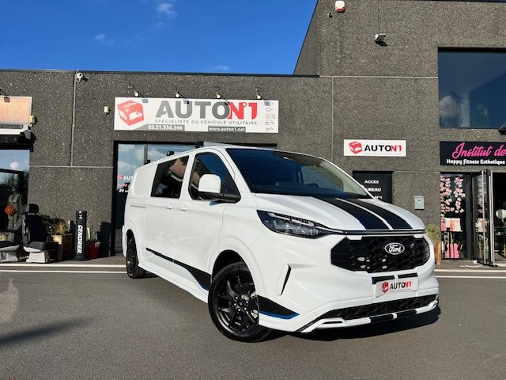

L'artisan
Le chantier du lundi
Deux places, cloison en place, 1 970 mm de chargement. Rails d'arrimage pour l'échelle, caissons de roues pour l'outillage. Un vrai utilitaire, homologué CTTE.
Je charge le matériel le lundi, je décharge le vendredi. Entre les deux, c'est mon atelier roulant.